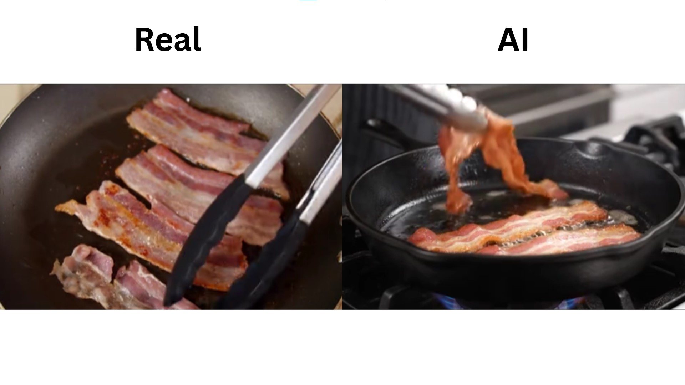
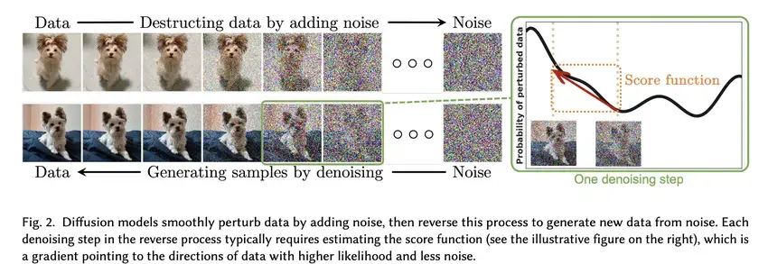
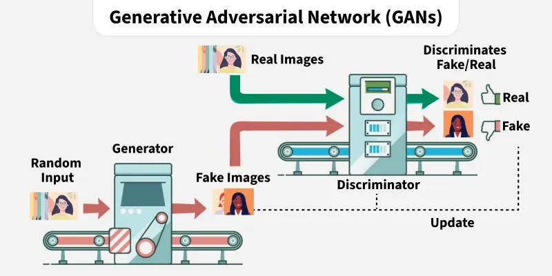

AI-generated images have become so convincing that even trained professionals can struggle to tell them apart from real photographs. But how exactly does an AI turn a few words into a detailed, lifelike image? The answer lies in a fascinating combination of mathematics, neural networks, and massive amounts of training data.
The Basics of AI Image Generation
AI image generation is the process by which an artificial intelligence system creates a visual image — either from a text description, another image, or a combination of inputs. Unlike traditional computer graphics, which rely on human artists to manually draw or model every element, AI image generators create new visuals entirely on their own by drawing on patterns learned during training.
The most widely used approach today is called a diffusion model. Other techniques, such as Generative Adversarial Networks (GANs), were more common in earlier years and are still used in some applications. Both approaches rely on deep learning, but they work in fundamentally different ways.

Diffusion Models Explained
Diffusion models are currently the dominant technology behind tools like DALL·E, Midjourney, and Stable Diffusion. The process works in two stages: a forward process and a reverse process. During training, the model learns the forward process by taking a real image and gradually adding random noise to it, step by step, until the image becomes pure static. The model then learns to reverse this — starting from noise and slowly removing it to reconstruct a clear image.
Once trained, the model can generate entirely new images by starting with random noise and applying the reverse process. A text prompt is used to guide what the final image should look like, steering the denoising process toward a specific result. This is why a prompt like "a rainy street in Tokyo at night" will produce a coherent, detailed scene rather than random shapes.

Diffusion models do not copy or paste existing images. Every output they generate is a brand new creation, synthesized from the patterns the model learned during training on millions of real images.
The Role of Text Prompts
The text prompt is the user's main tool for controlling what an AI generates. When you type a description, the AI converts that text into a mathematical representation and uses it to guide the image generation process. The more specific and detailed the prompt, the more control the user has over the final result.
For example, a prompt like "a golden retriever sitting in a field of sunflowers, soft morning light, photorealistic" will produce a very different result from simply typing "a dog." Experienced users learn to craft prompts carefully, specifying not just the subject but also the style, lighting, mood, and perspective they want.
Subject
Describe the main object or scene clearly — e.g., "a lighthouse on a rocky cliff."
Style
Specify artistic style — e.g., "oil painting," "photorealistic," or "anime."
Lighting
Include lighting details — e.g., "golden hour light," "neon glow," or "overcast sky."
Composition
Guide the camera angle — e.g., "wide shot," "close-up portrait," or "bird's eye view."
GANs: An Older Approach
Before diffusion models became dominant, Generative Adversarial Networks (GANs) were the leading technology for AI image generation. A GAN consists of two competing neural networks: a generator and a discriminator. The generator creates fake images, while the discriminator tries to determine whether an image is real or fake. Over time, the generator improves by trying to fool the discriminator, and the discriminator improves by becoming better at detecting fakes.
GANs are still used today for specific tasks like face swapping and style transfer. However, they tend to struggle with consistency and can produce distorted results, especially with complex scenes. Diffusion models have largely replaced them for general image generation because they produce higher-quality, more coherent results.

What AI Images Look Like Up Close
Even though AI images can look highly realistic at a glance, they often contain telltale signs of artificial generation when examined closely. Common artifacts include distorted hands with the wrong number of fingers, inconsistent text that appears as gibberish, unnatural skin textures, and lighting that does not match across different parts of the image.
The most common giveaway of an AI-generated portrait is the hands. Count the fingers — AI still struggles to get them right consistently.
— Digital Media Forensics ResearchJewelry and accessories are another weak point — earrings may be asymmetrical, glasses may have frames that merge into the face, and background elements often blur or repeat in unnatural patterns. Learning to spot these details is one of the most effective ways to identify AI-generated images in the wild.
Common Uses of AI Image Generation
AI image generation has many legitimate and creative applications. Designers use it to quickly mock up concepts and visual ideas. Authors and game developers use it to generate character references and concept art. Educators use it to create illustrative visuals. Marketing teams use it to generate promotional imagery quickly and at low cost.
Unfortunately, the same technology is also used to create misleading content — fake news images, fabricated evidence, non-consensual imagery, and visual propaganda. The ease and speed of AI image generation means that harmful images can be produced and spread faster than they can be identified and removed.
AI-generated images can be used to fabricate events that never happened. Before sharing or reacting to a striking image online, take a moment to verify its source and look for signs of AI generation, such as distorted hands, unnatural backgrounds, or inconsistent lighting.
What We've Learned
AI image generation is powered primarily by diffusion models, which learn to create images by reversing a process of adding and removing noise. Text prompts guide this process to produce specific, detailed results. Earlier techniques like GANs helped lay the groundwork, and are still used in some specialized applications today.
While AI-generated images are becoming increasingly convincing, they still carry visual artifacts that can be identified with careful observation — particularly in hands, text, and background details. Understanding how these images are made is the first step toward critically evaluating the visual media we encounter every day, and protecting ourselves from being misled by synthetic content.
AI does not copy existing images — it generates entirely new ones based on learned patterns. This makes AI-generated fakes very difficult to trace back to a specific source, which is why critical thinking and visual literacy are more important than ever.